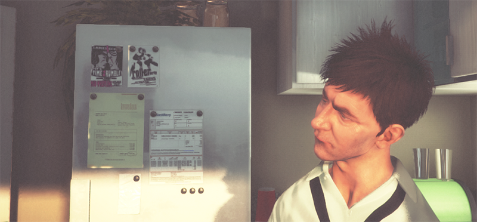

Unity 支持 DirectX 11 (DX11) 和 OpenGL Core 图形 API。本页将详述如何使用它们。
Windows 系统在默认情况下启用 DirectX 11。您的游戏和 Unity Editor 使用 DX11，当 DX11 不可用时，则回退到 DX9。
To enable or disable DirectX 11 for your game builds and the Editor, go to Edit > Project Settings > Player to open the Player Settings. Navigate to Other Settings and un-tick Auto Graphics API for Windows. In the panel that appears, select Direct3D11 and click the minus (-) button to remove it, or click the plus (+) button and choose Direct3D11 from the list to add it.
Once Direct3D11 is in the list, you can drag it up and down to define the priority in which the graphics API is selected - the Unity Editor and player defaults to the one at the top of the list, and uses each one after that as a fall back option, in order of how they are listed.
NOTE: DX11 requires Windows Vista or later, and at least a DX10-level GPU (preferably DX11-level). The Unity Editor window title has <DX11> at the end when it is running in DX11 mode.
Mac 和 Linux 系统在默认情况下启用 OpenGL Core。您的游戏和 Unity Editor 在这些平台上使用 OpenGL Core。
To enable OpenGL Core on Windows and make it the default, go to Edit > Project Settings > Player to open the Player Settings. Navigate to Other Settings and un-tick Auto Graphics API for Windows. In the panel that appears, click the plus (+) button and choose OpenGLCore from the list to add it.
OpenGL Core 的最低要求如下：
Compute Shaders allow you to use GPU as a parallel processor. See documentation on Compute Shaders for more information.
表面着色器支持简单的曲面细分和移位。请参阅有关表面着色器曲面细分的文档以了解更多信息。
手动编写着色器程序时，可使用全套 DX11 Shader Model 5.0 功能，包括几何 (Geometry) 着色器、外壳 (Hull) 着色器和域 (Domain) 着色器。
表面着色器编译管线的某些部分不能理解 DX11 特有的 HLSL 语法，因此如果您正在使用 HLSL 功能，如 StructuredBuffers、RWTextures 和其他非 DX9 语法，需要将其包装到仅限 DX11 的预处理器宏中。请参阅有关平台特定差异的文档以了解更多信息。
以下截屏通过示例说明了可使用 DirectX 11 和 OpenGL Core 实现的目标。
上图中所示的立体爆炸是用光线追踪 (Raymarching) 技术渲染而成的，使用 Shader Model 5.0 即可实现这一点。此外，生成和更新深度值后，将与基于深度的图像效果（如景深或运动模糊）完全兼容。
 上图中的头发是通过曲面细分和几何着色器实现的，这些着色器可动态生成并动画化每一束头发。着色基于 Kajiya-Kai 提出的模型，能实现更可信的漫射和镜面反射行为。
与前一张图中所示的头发技术类似，这双拖鞋上的软毛也基于从简单基础拖鞋网格发射产生的几何形状。
上图中的模糊效果（被称为__散景__）基于在非常明亮的像素上压制的纹理。此技术可产生非常可信的摄像机镜头模糊感，特别是与 HDR 渲染结合使用时，效果更好。
This image shows an exaggerated lens blur. This is a possible result of using the new Depth of Field effect.